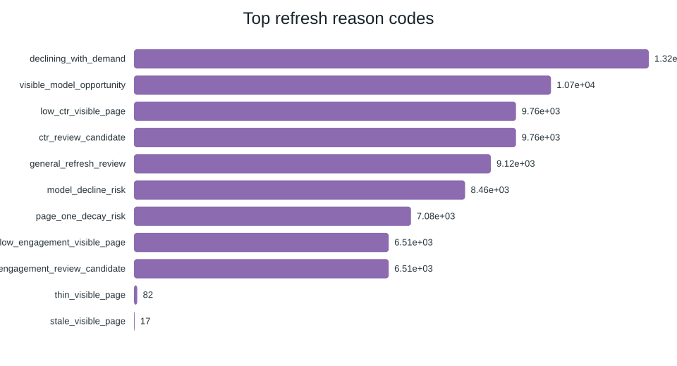

Using a ranked refresh model to identify content that may deserve review
This paper evaluates whether a simple, transparent machine-learning model can help a content team prioritize refresh review for pages that still attract demand but may be drifting in usefulness. The work uses a client-holdout validation design and focuses on honest, decision-support language rather than automation claims.
Abstract
This study addresses a real FlyRank content-operations problem: many pages still attract some demand, but content teams cannot review every page manually. The question is not whether a page is broken; it is which pages deserve a human refresh review first. The analysis uses a public-safe, anonymized content refresh dataset with 30,000 rows and a client-holdout validation strategy to compare a transparent baseline against a machine-learning model. The best-performing model, a random forest, improves precision at 50 from 0.24 for the baseline to 0.68 on the same split, which suggests the model is useful as a prioritization aid rather than an automated decision engine. The results are most relevant for pages that still attract visible demand but show signs of decline risk, low CTR, or engagement drift. The paper therefore frames the model as a reviewer aid for editorial triage, with clear boundaries around campaign-sensitive, policy-sensitive, or low-signal cases.
Introduction / Problem statement
In the FlyRank content-refresh workflow, the practical question is rarely whether a page is obviously wrong. It is which pages deserve a human review first when they still show demand but may be drifting in usefulness. A simple rule based on recency or traffic alone is easy to explain, but it misses pages that appear healthy enough to keep running while quietly losing value over time.
This paper addresses that decision problem by testing a ranked model that surfaces refresh opportunities for editorial triage. The goal is to support a human reviewer, not replace one.
Data
The analysis uses the anonymized FlyRank internship dataset, specifically the bundled content refresh release. The work uses 30,000 scored rows, with the target defined as an observed declining-label outcome. The data includes visibility, freshness, position, engagement, and content-shape features. The study excludes raw URLs, client names, and other identifiers from the public-facing write-up and keeps the analysis public-safe.
The target positive rate is approximately 54.2%, and the evaluation uses a client-holdout split so the model is assessed on unseen clients rather than on rows from the same client distribution.
Methodology
The paper compares a transparent baseline against a machine-learning ranking approach on the same validation split. The baseline uses simple rule-based logic, while the model uses a random forest trained on a set of numeric and categorical features such as search volume, competition, position, engagement, content age, and freshness indicators. The label definition is the observed declining-label target used by the repository workflow.
The evaluation focuses on ranking metrics rather than raw accuracy because the use case is prioritization. Precision@50 is a central metric because it reflects how often the top-ranked suggestions are actually useful to a reviewer. The work also performs leakage checks and keeps the analysis constrained to the same feature set and split used throughout the project.
Results
The random forest model outperforms the baseline on the same client-holdout split. The best model improves precision at 50 from 0.24 to 0.68, while also improving average precision and ROC AUC. That does not mean the model is perfect; it means it is good enough to be useful as a triage signal.
| Model | ROC AUC | Avg precision | Precision@50 | Recall | F1 |
|---|---|---|---|---|---|
| Decision tree | 0.742 | 0.575 | 0.660 | 0.716 | 0.634 |
| Logistic regression | 0.700 | 0.522 | 0.400 | 0.567 | 0.566 |
| Random forest | 0.747 | 0.610 | 0.680 | 0.741 | 0.638 |
| Baseline rules | 0.627 | 0.468 | 0.240 | - | - |




Limitations & honest framing
This work is directional and observational. It is not a causal study, and it should not be treated as a production automation engine. The model is most useful for surfacing pages that deserve editorial review, especially when a page still has visible demand but is showing signs of decline risk.
The analysis also depends on the quality and scope of the available feature set. It cannot claim that a refresh will definitely improve outcomes, and it should not override campaign timing, policy review, or editorial judgment.
Ranked recommendations
The ranked queue is best used as a triage tool for content operations. A practical sequence is: review the highest-ranked items first, inspect business importance and current editorial context, and only then decide whether a refresh should proceed.
- Review the highest-ranked pages first when demand is still visible but decline risk is rising.
- Prioritize refresh review for pages that show low CTR or weak engagement alongside visible demand.
- Keep campaign-critical, policy-sensitive, or low-signal pages out of automated refresh flows.
Reproducibility
The full analysis and notebooks live in the repository under the work and scripts folders. The linked outputs include the model report, the ranked queue, and the generated charts that support the paper. The public-safe repository structure is intended to let a reader inspect the methodology and rerun the workflow with the provided artifacts.
- Notebook: GitHub notebooks
- Repository: GitHub repository
- Report outputs: Generated outputs
Acknowledgments & data credit
This work uses the FlyRank ML Internship dataset and is built on the public-safe anonymized release provided for the internship workflow. The project credits the data source at FlyRank.